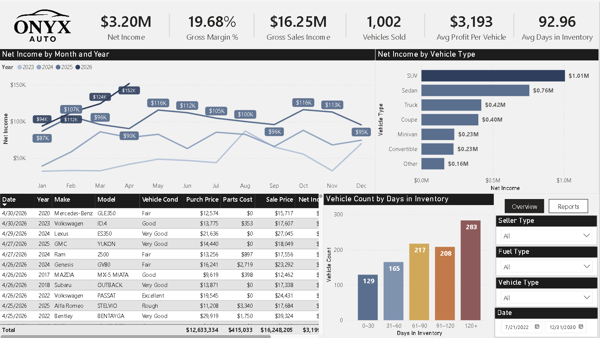
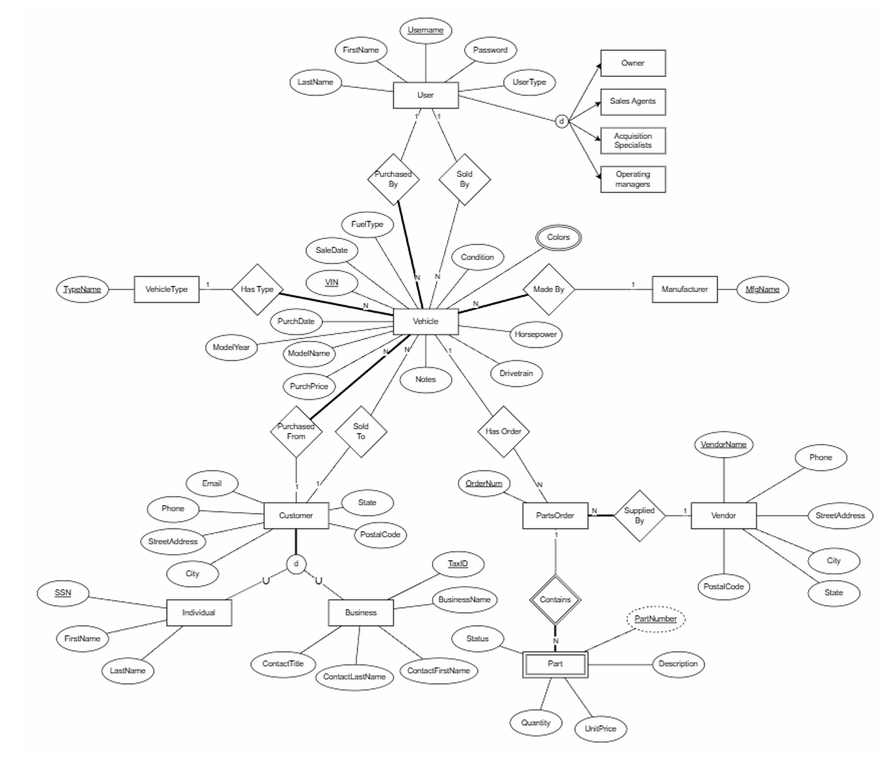
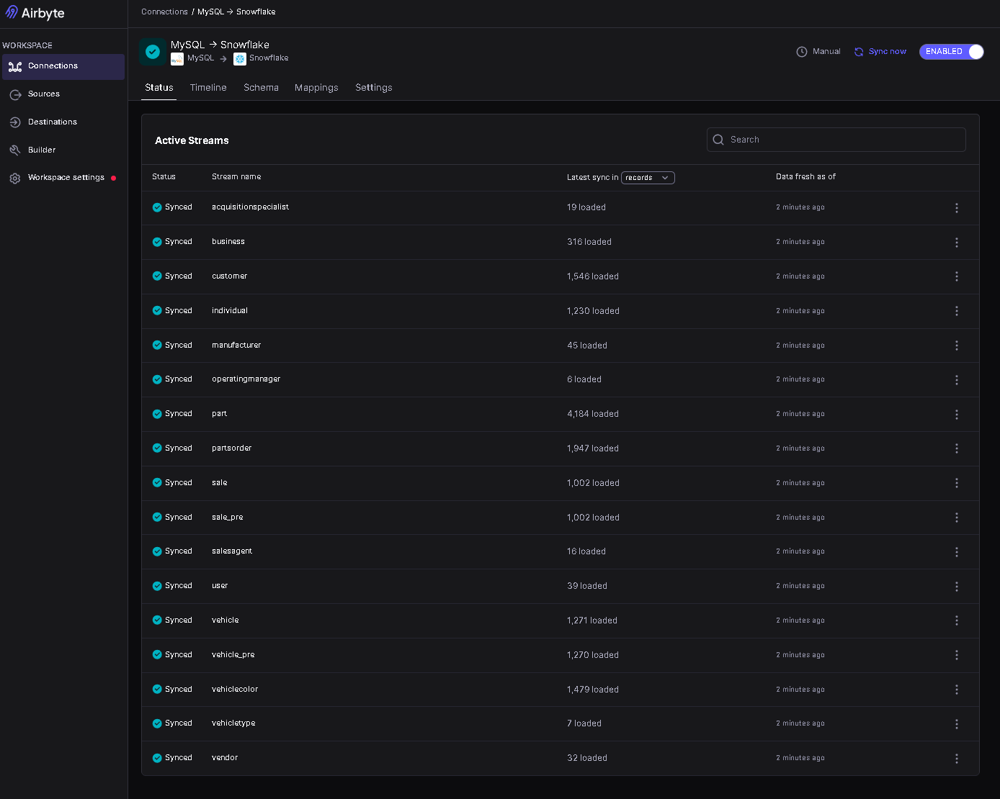
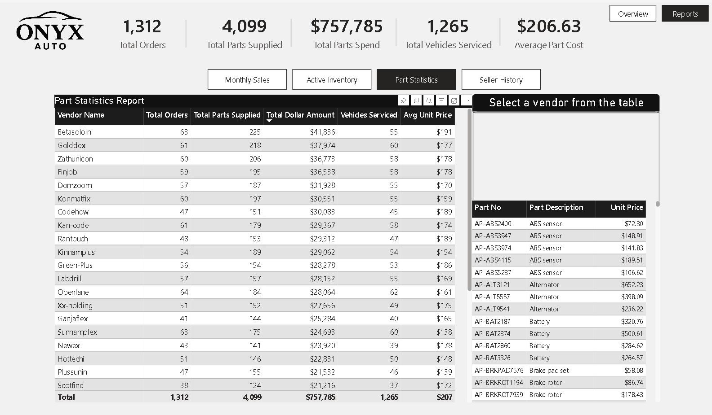
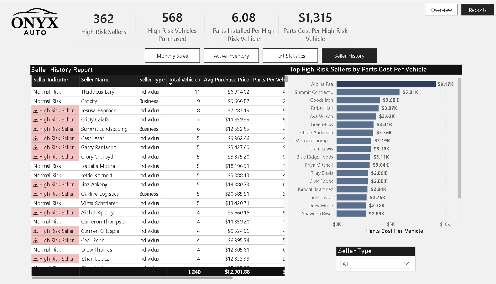
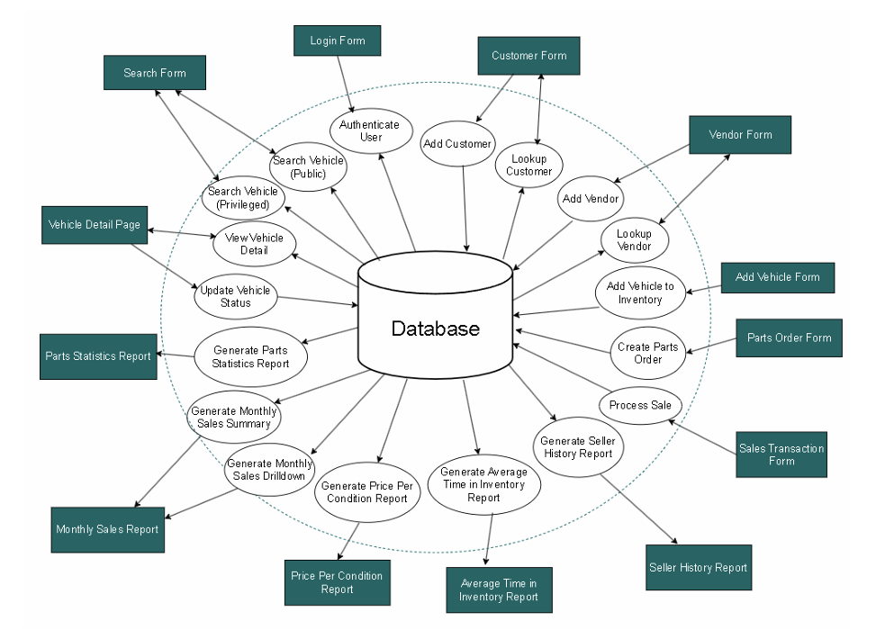
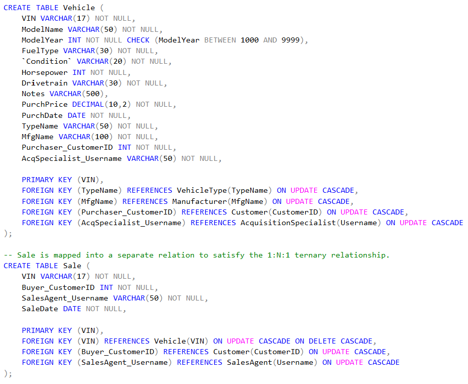
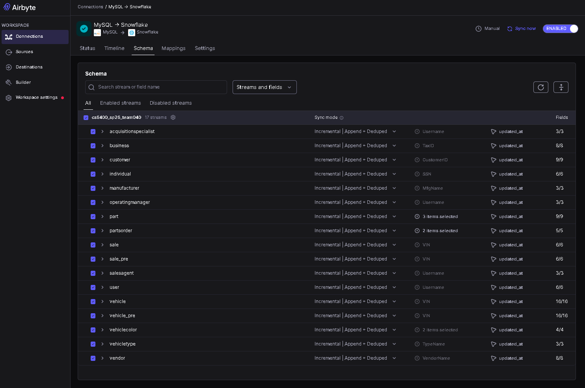

Featured Case Study
Onyx Auto: Source-to-Dashboard Analytics Engineering Platform
Onyx Auto simulates a used car dealership data platform that captures operational records, ingests MySQL data into Snowflake, transforms it with dbt, orchestrates refreshes with Airflow, and serves Power BI reporting for sales, inventory, parts, and seller-risk analysis.
Case Study at a Glance
Business Problem + Reporting Questions
Dealership leaders need reliable answers without querying raw operational tables.
Used car dealerships need visibility into inventory, sales, parts activity, seller quality, and operational performance. Transactional systems record activity, but they are not designed to serve clean analytical reporting across multiple business areas.
How much net income and gross sales income has the dealership generated?
How long are vehicles remaining unsold?
Which sales agents are driving monthly performance?
Which sellers are associated with higher downstream parts costs?
Dashboards
Business-facing reporting built from curated dbt marts.
Power BI is intentionally shown early because it is the final business-facing product. The dashboard connects to curated Snowflake mart models and presents executive, sales, inventory, parts, and seller-risk reporting.

Architecture
Source-to-dashboard workflow with a clear responsibility for each layer.
The architecture starts with operational dealership data captured in a PHP frontend and stored in MySQL. Airbyte syncs source tables into Snowflake, dbt transforms raw data into reporting models, Power BI consumes final marts, and Airflow coordinates the refresh process with Teams-based failure alerts.

Source App + Database
Operational data is modeled before it reaches the analytics layer.
The source system is a PHP dealership application backed by a MySQL transactional database. It captures customers, vehicles, vendors, parts orders, users, employee roles, and sales transactions. Vehicles are keyed by VIN, and sales are stored separately so unsold vehicles can remain in inventory cleanly.

Airbyte Ingestion
Operational records are incrementally synchronized into Snowflake.
Airbyte moves dealership streams such as customers, vehicles, sales, parts orders, vendors, manufacturers, users, and employee role tables from MySQL into Snowflake. The raw destination lands in DEALERSHIP_RAW.MYSQL_LOAD and uses an incremental append-and-deduplicate pattern with an updated_at cursor field.

dbt Modeling
Raw source tables are converted into reusable reporting models.
The dbt project, dealership_data, uses staging, intermediate, and mart layers. Staging and intermediate models are materialized as views for lightweight transformation, while mart models are materialized as tables for stable Power BI consumption.
Standardizes raw source tables.
Applies reusable business logic.
Creates dimensions, facts, and aggregates.
Validates and explains reporting models.


Airflow Automation
The refresh process is scheduled, observable, and failure-aware.
Apache Airflow orchestrates the daily onyx_auto_pipeline DAG at 3:00 AM. The workflow triggers Airbyte, waits for ingestion, runs the dbt build, refreshes the Power BI semantic model, and sends Microsoft Teams alerts if a pipeline task fails.

Technical Evidence Gallery
Additional screenshots for technical reviewers.
The main story above keeps the case study skimmable. The gallery below preserves deeper implementation evidence without forcing every recruiter through every screenshot.
View additional dashboard pages




View additional implementation screenshots




Outcomes
Demonstrated capabilities and simulated business value.
Because Onyx Auto is a simulated dealership platform, the strongest outcome framing is demonstrated capability rather than invented production impact. The project shows how an operational source system can be transformed into a reliable analytics product.
Recruiter Takeaway
This project maps directly to analytics engineering and data engineering expectations.
Onyx Auto demonstrates that I can design, build, document, and present a full analytics platform from operational source data to business reporting. The project includes database design, ingestion, warehouse organization, layered dbt modeling, dimensional marts, dashboard development, orchestration, and operational alerting.
For analytics engineering roles, the strongest evidence is the dbt transformation structure, tested reporting models, dimensional marts, and Power BI consumption layer. For data engineering roles, the strongest evidence is the ingestion workflow, Snowflake warehouse design, Airflow automation, Docker-based runtime environment, and failure-aware pipeline monitoring.